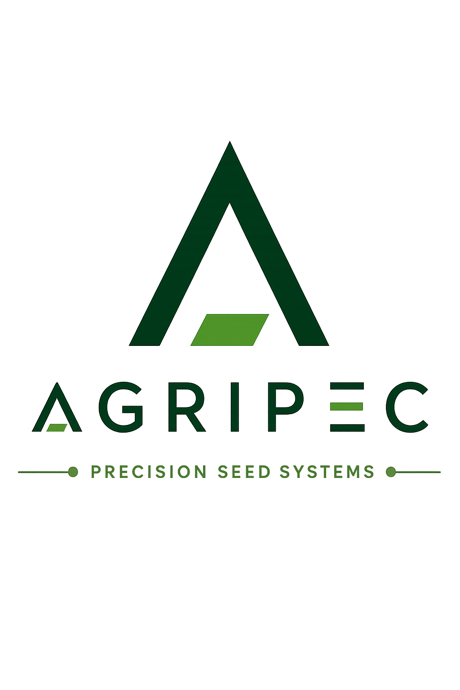

Eduardo Villalobos Ordenes
Ingeniero Agrónomo
Agricultural Digital Solutions Specialist
|
eduardo@agripec.cl
|
+56 9 3927 3304
|
www.agripec.cl
|
Subdivisión Fundo Puerto Oscuro, Lote B8
Ruta D-71, Canela, Chile